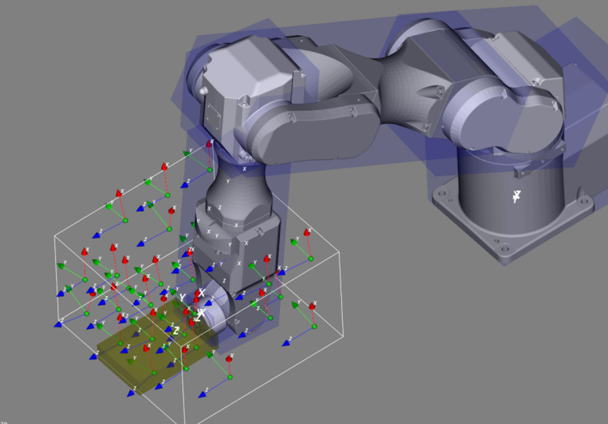

该工具主要服务于3D视觉引导项目，提供自动获取机械手手眼标定姿态的功能，支持两阶段手眼标定和区域自动标定两种模式，工具主要应用在3D视觉引导项目的手眼标定流程上，可简化传统手动示教机械手手眼标定姿态的繁琐工作。

该工具主要用于配合机械臂抓取或引导类项目比如：
场景1：3C产品大范围的尺寸测量、缺陷检测、柔性装配等3D引导检测项目
场景2：仓储物流领域的无序抓取分拣、拆垛码垛 or 汽车制造领域的涂胶、焊接等自动化项目


标定姿态结果界面如下：

| 参数名称 | 参数描述 |
|---|---|
| 输入初始姿态 | 用户给定初始标定姿态，此姿态要求标定板在相机视野中心，且正对相机 |
| 一阶段手眼标定矩阵 | 一阶段3D相机与机械手的位姿转换关系 |
| 一阶段手眼标定标志点 | 一阶段靶标标志点位置 |
| 区域点集 | 标定区域由五个点构成 |
| 参数名称 | 参数描述 |
|---|---|
| 相机安装方式 | 支持眼在手外和眼在手上 |
| 标定平面层数 | 指定标定姿态分布的总层数，取值范围[3,10] |
| 标定网格数 | 指定每层平面上标定位姿的分布网格，取值范围[3,10] |
| 姿态个数 | 指定输出姿态的个数，取值范围[5,100] |
| 姿态旋转角度 | 指定标定姿态相对初始姿态旋转的最大角度，取值范围[0,45] |
| 自动标定方法 | 支持两阶段标定和区域标定 |
| 视野长 | 相机视野长，单位mm |
| 视野宽 | 相机视野宽，单位mm |
| 景深 | 相机景深，单位mm |
| 已有手眼标定结果 | 已完成一阶段标定 |
| 外部结果 | 是否启用外部结果导入 |
| 标定结果路径 | 标定结果在本地文件夹路径 |
| 外部点集 | 是否启用外部点集导入 |
| 点集路径 | 点集在本地文件夹路径 |
| 编辑点坐标 | 是否可以编辑点的坐标值 |
高级界面参数与属性窗口参数一致。
| 参数名称 | 参数描述 |
|---|---|
| 输出标定姿态 | 输出的机械手手眼标定位姿 |
| 参数名称 | 参数描述 |
|---|---|
| 输出标定姿态 | 输出的机械手手眼标定位姿 |
| 执行时间 | 工具执行时间 |
| 执行结果 | 工具执行结果 |
参见“\Samples\3D\点云\点云自动手眼标定工具.gvp”。